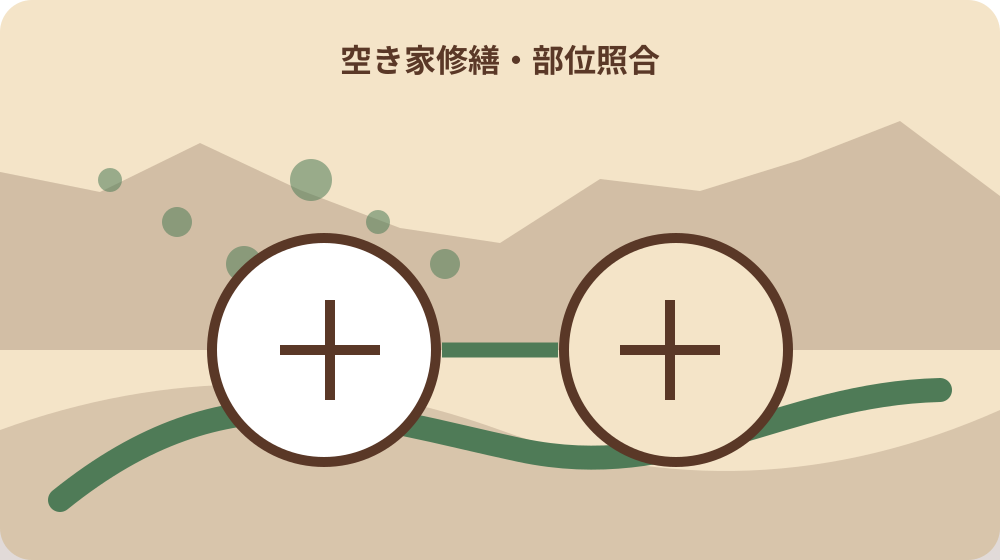
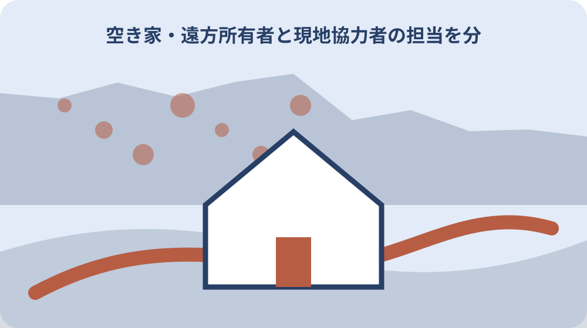

先に結論を確認する
この記事の答え：現況写真へ番号を振り、安全対応、設備、残置物、専門確認を分けます。調査、応急対応、登録前改修、契約後工事を別欄にして、同じ条件で業者へ見積りを依頼してください。
森町で最初に照合する条件：安全確認・管理・登録前改修・契約後工事を分ける
見積り前に現況・目的・未確認を三列へ分ける
森町の空き家を空き家バンクへ登録する前に修繕見積りを取る所有者は、業者へ『住めるように全部直して』とだけ頼みません。現在見える不具合、売却・賃貸で実現したい状態、専門確認が必要な箇所を三列にしてから現地を見てもらいます。
この記事の答えは、屋根・外壁・床・水回り・電気・残置物を場所別にし、調査、応急対応、登録前改修、契約後工事を別の見積り欄へ分けることです。価格の安さだけでなく対象範囲と未実施項目を比較します。
森町のバンク確認票には、水道・排水、雨漏り、床や白蟻、傾き・腐食、外壁、躯体・基礎、害獣、残置物が並びます。この区分を見積り依頼書の見出しに使うと、業者ごとの対象差を見つけやすくなります。
表紙には所在地、地番、家屋番号、所有者、鍵保管者、撮影日、希望する登録時期を書きます。売却か賃貸か決めていない場合は未定とし、希望条件を確定済みに見せません。
完了条件は総額が一つ出ることではありません。何を調べ、何を直し、何を直さず説明するかが分かり、町、家族、宅建業者へ同じ資料を示せる状態です。
最初の依頼書には、所有者が知っている過去の修繕と、今回初めて見つけた現象を分けて記します。補修済みという言葉だけで原因まで解消したとせず、施工年、業者、保証書、再発の有無を資料番号で結び付けます。
安全確認と流通準備を同じ工事にしない
瓦の落下、床の抜け、漏電、漏水など人や周辺へ影響する危険は、内装の見栄えや設備更新より先に相談します。危険な場所へ見積り担当者を案内せず、外観写真と立入り停止範囲を事前に共有します。
応急処置は、危険を一時的に広げない対応です。シート、養生、止水などの費用を恒久修繕の完成費と混ぜず、作業期限と残る危険を書きます。
流通準備は、買主・借主へ状態を説明しやすくする作業です。すべて新品にすることではなく、現況の確認、必要な清掃、修繕の選択肢、未確認資料を整えます。
森町の計画資料は、所有者の維持管理相談に助言し、必要に応じ管理業者を紹介する流れを示しています。修繕だけでなく巡回管理を続ける案も相談対象にします。
危険対応、管理、改修、除却は同じ見積書へ一括せず、依頼目的を分けます。家族が総額だけを見て誤った工事範囲を想像しないよう、工事項目ごとに写真番号を付けます。
現地へ入る前に、立会人、連絡先、駐車場所、危険区域、鍵の受渡しを決めます。複数業者が別日に見る場合も、同じ図面と写真を使い、確認条件の差が見積額の差へ混ざらないようにします。
屋根・外壁・基礎を方角と部位で記録する
外観は道路側、北側、南側、隣地側など方角を付け、屋根、雨樋、外壁、開口部、基礎、門塀、擁壁を分けます。全景と近景の写真を組にし、亀裂だけの拡大写真で場所が分からなくなるのを防ぎます。
雨漏り跡がある場合は、天井染み、屋根側の位置、発見時期、雨天後の変化、過去補修を記します。原因を所有者の推測で決めず、調査範囲を見積りへ明記します。
外壁の亀裂や剥落は、足場の要否、部分補修か全面工事か、下地確認を分けて尋ねます。塗装費だけで躯体や雨水経路まで確認できるとは限りません。
基礎や傾きは、建具の動き、床の感触、見える亀裂を場所別に残します。目視だけで構造安全を断定せず、必要なら建築士等の調査へ切り替えます。
見積書には仮設足場、養生、廃材、運搬、諸経費、追加調査の条件を分けてもらいます。同じ屋根工事という名称でも含む範囲が違うためです。
方角別の写真には、道路、隣地、電線、側溝、樹木も入れます。足場や資材搬入が必要な工事では建物だけでなく進入経路が費用へ影響するため、現場条件を見積り担当へ先に伝えます。
床・白蟻・室内の傷みを部屋番号で追う
平面図へ部屋番号を振り、床の沈み、きしみ、腐食、白蟻跡、壁天井の染み、建具不良を記します。業者へ口頭で案内するだけでなく、見た部屋と見ていない部屋を一覧にします。
家具や残置物で床が見えない場所は未確認にします。見積り前に無理に移動してけがをせず、片付け後の再確認費用を別欄へ置きます。
白蟻被害の有無は表面の跡だけで断定しません。調査業者の確認範囲、床下へ入れる場所、薬剤処理と木部交換の違いを尋ねます。
内装の汚れ、壁紙、畳と、雨漏りや構造に関係する傷みを分けます。見栄えの工事を先にして原因確認が難しくならない順序を相談します。
部屋別見積りには、現況写真、工法、数量、単価、処分費、工期を結び付けます。『一式』だけの項目は対象範囲を質問し、回答日を残します。
室内確認後は、立入りできなかった収納、天井裏、床下を一覧にします。見られない箇所を異常なしにせず、残置物撤去後の再訪や専門調査が必要かを別の費用として尋ねます。

水道・排水・電気・ガスの停止状態を明記する
森町の確認票は、上水道、地下水、簡易水道、共同水道等と、下水道、浄化槽、くみ取りを分けています。見積り依頼では設備の種類、契約停止、最後の利用日、点検記録を整理します。
通水していない物件を漏水なしとは説明できません。元栓、メーター、給湯器、配管、排水先を確認できる範囲に分け、再開立会いや漏水調査の費用を尋ねます。
浄化槽はブロワ、清掃、法定検査の記録を確認し、設備交換と維持管理契約を混ぜません。くみ取り便槽や井戸がある場合も現況と確認先を別欄にします。
電気は契約の有無、分電盤、配線、照明、コンセント、設備容量を分けます。通電していない設備を作動確認済みにせず、専門業者の点検範囲を明記します。
ガスや灯油設備は、容器、配管、給湯器、残油、撤去の要否を確認します。空き家の登録前改修と、将来の利用者が選ぶ機器更新を分けて見積ります。
設備の更新時期は、現在使えるかだけでなく、部品供給、点検、利用者の希望でも変わります。所有者が登録前に行う最低限と、購入者・賃借人が選ぶ更新を分けることで二重工事を避けます。
残置物処分と改修工事を別会計にする
森町の支援ページは、残置物処分と改修工事を別の対象経費として示しています。見積りも家財、家電、ごみ、清掃、支障木と、台所、風呂、トイレ、設備、内装、屋根、外壁を分けます。
残置物は部屋番号、所有者、処分可否、家族確認日を付けます。仏壇、写真、書類、農具、薬品などを業者任せにせず、処分前に家族が分類します。
家電は通常の家財と処分経路が異なる場合があります。品目、型式、数量、搬出経路を見積書へ反映し、処理費だけでなく運搬条件を確認します。
森町は残置物処分を委託する場合、一般廃棄物処理業の許可を受けた業者へ依頼する要件を示しています。依頼先の許可範囲を町へ確認します。
清掃や草刈りは一回限りと継続管理を分けます。登録後も内覧まで時間がかかるなら、再繁茂や換気を含む管理費を別に見積ります。
処分見積りには数量、搬出階、車両位置、分別、清掃の範囲を示します。写真だけでは量を判断しにくい品目は現地計測を頼み、家族の保留品が処分対象へ混ざらないよう札を付けます。
補助要件を契約・着工前に確認する
森町の支援は、空き家バンクに登録可能な一戸建ての残置物処分や改修を対象として案内されています。見積りを取っただけで交付が決まったと考えず、申請時点の要件を定住推進課へ確認します。
対象者は、利活用を目的とする所有者、購入者、賃借人で、処分や改修を行う権限がある人または所有者の許可を受けた人とされています。家族が申請する場合の権限を確認します。
要件には空き家バンクへ二年以上継続登録すること、税等の滞納がないこと、暴力団関係者でないこと、三親等内親族へ売却・賃貸しないことが示されています。個別に該当を確認します。
案内上の上限は残置物処分十万円、改修工事三十万円で、予算の範囲内とされています。工事総額から自動的に差し引かず、交付決定前の契約・着工可否を町へ尋ねます。
申請、計画変更、実績報告、請求の各様式が掲載されています。見積り変更や追加工事が生じた場合は、工事を進める前に変更手続の要否を確認します。
補助の対象にならない費用も工事には必要な場合があります。見積書の各行へ対象確認済み、町へ質問中、対象外の印を付け、対象外だから不要な工事だという誤解を避けます。
複数見積りを同じ質問で比較する
業者ごとに依頼範囲が違うと総額を比較できません。共通依頼書へ写真番号、数量、希望時期、調査範囲、処分範囲、補助確認中の項目を書きます。
見積り表は、必須の安全対応、登録前に行う改修、利用者と相談する工事、今回は行わない項目へ分けます。安価な見積りが単に対象外を増やした結果でないかを確認します。
追加費用の条件として、壁を開けた後、通水後、足場設置後、残置物撤去後などを記します。上限額だけでなく、追加判断を誰がいつ行うか決めます。
工期は着手日だけでなく、調査、材料手配、町への確認、完了写真、内覧再開を並べます。登録希望日に間に合うと断定せず、停止条件を共有します。
支払条件は着手金、中間、完了、追加工事を分けます。補助金の入金時期と業者への支払期日を混ぜず、自己資金で必要な時点を家族で確認します。
比較会議では、最安値を選ぶ前に対象写真の抜け、保証、追加条件、工期、廃材処理を確認します。回答が口頭だけなら見積書の余白へ日付付きで記し、改訂版の発行を依頼します。
建物状況調査と工事見積りを混同しない
国土交通省は、建物状況調査の活用に関する案内と消費者向け手引きを公開しています。工事業者の見積りが法令上の建物状況調査と同じだと決めつけません。
国の標準媒介契約約款では、建物状況調査が瑕疵の有無を判定するものではないなどの限界が明記されています。調査をしても建物のすべてが保証されるわけではありません。
調査を依頼するなら、調査者、対象範囲、実施日、報告書、立会い、費用を確認します。修繕業者が行う原因調査とは目的と成果物を分けます。
過去の調査報告書がある場合は、実施後の台風、漏水、改修、空き家期間を記録します。古い報告書を現在の状態そのものとして使いません。
見積り比較表には、所有者目視、専門調査、工事見積り、町への制度確認という根拠欄を付けます。どの回答を誰が出したかが分かります。
調査結果は工事の営業資料と切り離して保管します。誰がどの資格や立場で見たかを記録し、別業者へ見積りを頼む場合も調査範囲を正確に伝えます。

家族の合意と工事権限を先に確認する
相続や共有がある物件は、見積り取得、立入り、工事契約、費用負担を同じ権限と考えません。名義、共有者、鍵管理者、費用承認者を分けます。
土地と建物の所有者が違う場合、外構、配管、支障木、足場の範囲が他人地へ及ばないか確認します。森町のバンク案内も土地建物所有者が違う場合の同意を求めています。
工事前写真、見積書、発注書、完了写真、請求書を一つの案件番号で管理します。家族の口頭承認だけで追加工事を増やさず、承認日を残します。
費用負担は修繕、残置物、管理、交通、調査へ分けます。売却代金で後から精算する予定でも、立替者と領収書を記録します。
売却をまだ決めていない家族も、危険箇所の最小対応と現況記録には参加できます。工事を急ぐことと将来の処分判断を分けます。
共有者会議では、必須安全工事、登録前工事、補助申請、将来工事の順で承認を取ります。一括承認にせず、予算を超えたときに止める金額と連絡先を決めます。
大石の視点：直す量より説明できる範囲を整える
ここまでの森町の登録確認項目、支援対象経費・要件・上限、相談対応、国の建物状況調査案内は公的資料で確認できる事実です。個別建物の必要工事と交付可否は現地と窓口で確認します。
私、大石浩之は、登録前にすべてを新品へ直すのではなく、危険、設備、残置物、未確認を説明できる状態にすることを勧めます。これは森町の指定工事ではなく、見積りの対象差を見えるようにする実務提案です。
道路、境界、登記、農地は改修工事だけでは解決しません。建物見積りと土地資料を並行して整理し、工事費が出た後に土地条件で計画が止まることを減らします。
売却、賃貸、管理継続のどれでも、現況写真と工事項目は家族の判断材料になります。補助を使うためだけに不要な工事を増やさず、暮らし方と費用を比べます。
今日できることは、家の平面図と外観図へ写真番号を振り、安全、設備、残置物、未確認の四色を付けることです。その資料で同じ条件の見積りを依頼します。
公的事実と私の提案を分けることで、町が特定の工事を要求したような誤解を避けられます。町へは制度要件を、業者へは工法と費用を、家族へは目的と負担をそれぞれ確認します。
修繕見積り一件ファイルを完成させる
ファイル表紙に所在地、地番、所有者、登録予定、相談日、鍵保管者、家族担当を書きます。次に外観図、平面図、設備表、残置物表、見積り比較、町回答を並べます。
写真原本は上書きせず、説明用の印を付けた画像を別名にします。撮影日、方角、部屋番号、対象部位をファイル名へ入れます。
見積書は業者名、作成日、有効期限、工期、対象外、追加条件、支払条件を一覧にします。総額だけを家族へ送らず、差が生じた項目を説明します。
町への確認は、対象者、対象経費、二年登録、申請時期、変更手続、実績報告を質問別に残します。電話回答と公開ページの確認日を分けます。
最終結論は、直す、調べる、説明して残す、今回は見送るの四区分が決まることです。登録や契約を急がず、次の内覧・管理・家族判断へ同じ資料を渡します。見積りを更新した場合は旧版を消さず、変更理由と確認者を表紙へ追記して比較経過を保ちます。
完成ファイルには次回確認日を入れます。見積り有効期限、補助申請前の町相談、工事後確認、公開写真更新を日付順にし、担当者が替わっても止まった位置から再開できるようにします。さらに、採用しなかった見積りにも不採用理由を残し、価格、対象範囲、工期、追加条件のどこで判断したかを家族で共有します。工事後に登録写真を更新するときは、施工前後の写真を同じ方角で撮り、修繕済みの範囲と未実施箇所を分けて町へ説明します。補助の実績報告に使う写真や領収書は、登録用写真とは別の提出資料として整理し、必要書類の形式を定住推進課へ再確認します。